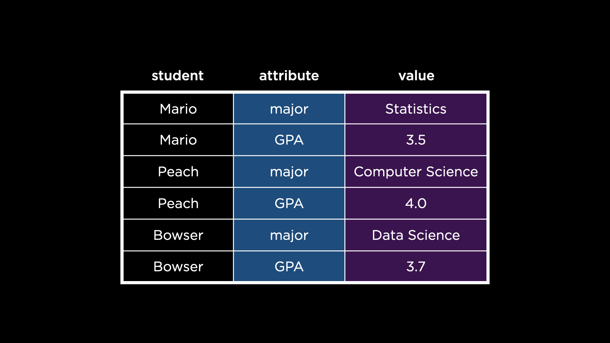
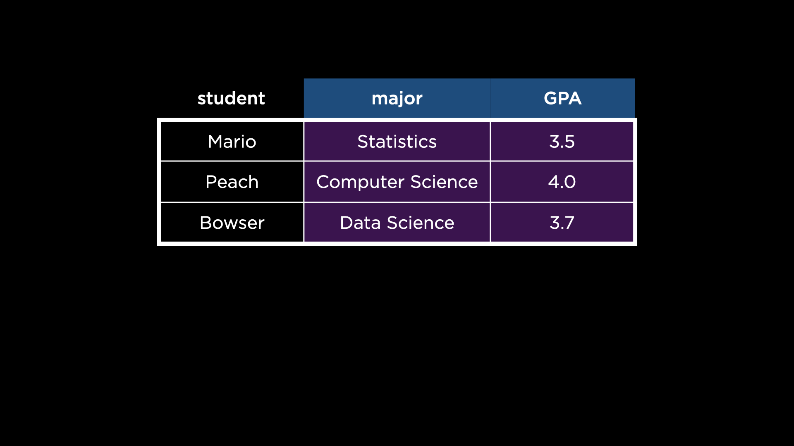

Lecture 4
Welcome!
- Welcome back to CS50’s Introduction to Programming with R!
- Today, we will be learning about tidying data. Indeed, you can imagine many times when tables and data may not be in the shape one would hope!
- Packages are bits of code created by developers that we can install and load into our R programs. These packages can give one functionality within R that does not come natively.
- Packages are stored in R’s library. As such, you can load packages with the
libraryfunction.
dplyr
- dplyr is a package within the tidyverse that includes functions to manipulate data.
- Within dplyr, a data set called
stormsis included, which includes observations of storm data from NOAA, the United States’ National Oceanic and Atmospheric Administration. - After loading dplyr or the tidyverse, the
stormsdata set can be loaded by simply typingstormsin the R console. - Upon typing
stormsnotice that a tibble is displayed. A tibble is tidyverse’s “reimagining” of R’s data frame. Notice how rows, row numbers, and various columns are included and labeled. Further, notice the text color that is employed in the tibble.
select
-
Let’s locate the strongest storm in the data set. First, let’s remove the columns we don’t need. Consider the following program:
# Remove selected columns dplyr::select( storms, !c(lat, long, pressure, tropicalstorm_force_diameter, hurricane_force_diameter) )Notice how the
selectfunction within dplyr allows one to determine which columns will be included in a data frame or tibble.select’s first argument is the data frame (or tibble) to operate on:storms.select’s second argument is the vector of columns to be selected. In this case, however, a!is employed: a!indicates that the proceeding column names are instead to be excluded. Alternatively, a-has the same functionality. Running this code will simplify the tibble by removing the above columns. - Typing out all these columns is a bit cumbersome!
-
Helper functions like
contains,starts_with, orends_withcan help with this. Consider the following code:# Introduce ends_with select( storms, !c(lat, long, pressure, ends_with("diameter")) )Notice how
ends_withis employed to exclude all columns that end with diameter. Less code is employed, but the result is the same as before.
filter
- Another helpful function is
filter, which can be used to filter rows from the data frame. -
Consider the following code:
# Find only rows about hurricanes filter( select( storms, !c(lat, long, pressure, ends_with("diameter")) ), status == "hurricane" )Notice how the only rows included are those that include
hurricanein thestatuscolumn. - Notice how the latest examples have dropped the
dplyr::syntax in the first example. Turns out you don’t need to name the specific package in which a function is defined, unless two or more packages define a function with the same name. In that case, you’ll need to remove ambiguity by specifying which package’s function you want to use.
Pipe Operator
-
In R, the pipe operator is signified by
|>, which allows one to “pipe” data into a specific function. For example, consider the following code:# Introduce pipe operator storms |> select(!c(lat, long, pressure, ends_with("diameter"))) |> filter(status == "hurricane")Notice how
stormsis piped toselect, implicitly becomingselect’s first argument. Then, notice how the return value ofselectis piped tofilter, implicitly becomingfilter’s first argument. When you use the pipe operator, you can avoid nesting function calls and write your code more sequentially.
arrange
-
Now let’s use the
arrangefunction to sort our rows:# Find only rows about hurricanes, and arrange highest wind speed to least storms |> select(!c(lat, long, pressure, ends_with("force_diameter"))) |> filter(status == "hurricane") |> arrange(desc(wind))Notice how the return value of the
selectfunction is piped tofilter, the return value of which is then piped toarrange. The rows in the resulting data frame are arranged in descending order by value of thewindcolumn.
distinct
- You may notice that this tibble includes many rows of the same storm. Because this data includes many observations of the same storms, this is not a surprise. However, would it not be nice to be able to find only distinct storms?
- The
distinctfunction allows one to get back distinct items in our tibble. - Distinct returns distinct rows finding duplicate rows and returning the first row from the set of duplicates.
- By default,
distinctwill consider rows to be duplicate only if all values in a row match all values in another row. -
However, you can tell
distinctwhich values to consider when determining whether rows are duplicates. Consider the following code that leverages this ability:# Keep only first observation about each hurricane storms |> select(!c(lat, long, pressure, ends_with("force_diameter"))) |> filter(status == "hurricane") |> arrange(desc(wind), name) |> distinct(name, year, .keep_all = TRUE)Notice that
distinctis told to only look at thenameandyearof each storm to determine if it is a distinct item..keep_all = TRUEtellsdistinctto still return all the columns for each row.
Writing Data
- It’s possible for us to save our data for later in a CSV file.
-
Consider the following code:
# Write subset of columns to a CSV hurricanes <- storms |> select(!c(lat, long, pressure, ends_with("force_diameter"))) |> filter(status == "hurricane") |> arrange(desc(wind), name) |> distinct(name, year, .keep_all = TRUE) hurricanes |> select(c(year, name, wind)) |> write.csv("hurricanes.csv", row.names = FALSE)Notice how the result of the first block of code is stored as
hurricanes. To storehurricanesas a CSV file,selectfirst chooses 3 particular columns (year,name, andwind) which are written to a file namedhurricanes.csv.
group_by
- Let’s now find the most powerful hurricane in each year.
-
Consider the following code:
# Find most powerful hurricane for each year hurricanes <- read.csv("hurricanes.csv") hurricanes |> group_by(year) |> arrange(desc(wind)) |> slice_head()Notice how
hurricanes.csvis read intohurricanes. Then, the functiongroup_byis employed to group together all hurricanes in each year. For each group, the group is arranged in descending order bywindusingarrange(desc(wind)). Finally,slice_headis used to output the top row from each group. Thus, the strongest storm from each year is presented. -
slice_maxselects the largest values within a variable. Consider how this can be employed in our code:# Introduce slice_max hurricanes <- read.csv("hurricanes.csv") hurricanes |> group_by(year) |> slice_max(order_by = wind)Notice that
hurricanesis grouped byyear. Then, the highest value ofwindis presented usingslice_max. Doing so eliminates the need forarrange(desc(wind)).
summarize
-
What if we wanted to know the number of hurricanes each year? Consider the following code:
# Find number of hurricanes per year hurricanes <- read.csv("hurricanes.csv") hurricanes |> group_by(year) |> summarize(hurricanes = n())Notice how the function
summarize, employingn, counts the number of rows in each group.
ungroup
-
Looking at our
hurricanesdata frame, you will notice that there are groups present. Indeed, these groups are byyear. There will be times in future activities where you may wish to ungroup items within your data. Accordingly, consider the following:# Show ungroup hurricanes <- read.csv("hurricanes.csv") hurricanes |> group_by(year) |> slice_max(order_by = wind) |> ungroup()Notice that the
ungroupcommand is employed to remove the groups of the tibble.
tidyr
- dplyr is quite useful when data is already well organized.
- What about situations where the data is not already well organized?
- For that, the tidyr package can be useful!
Tidy Data
-
According to the philosophy of the tidyverse, there are three principles that guide what we would call tidy data.
1. Each observation is a row; each row is an observation. 2. Each variable is a column; each column is a variable. 3. Each value is a cell; each cell is a single value. -
When evaluating data, best to look at the above three principles to see if they are observed.
Normalizing
- Normalizing is the process of converting data such that they fulfill the aforementioned principles.
- Normalizing can also refer to converting data such that they fulfill better design principles beyond the above guidelines.
-
Download the
students.csvfile from the course files and place it in your working directory. Create new code as follows:# Read CSV students <- read.csv("students.csv") View(students)Notice that this code loads a CSV file called
students.csvand stores these values instudents. - Examining this data, you may see how they do not follow the principles we mentioned previously. Which principles do you observe not being followed?
Pivoting
- In the
studentsdata set, you might notice there are row values that should instead be column names: “major” and “GPA.” To be clear, this data set violates the second principle of tidy data: each way a student can vary is not a column. - We can pivot the data set to turn those variables into columns, thanks to
pivot_wider!pivot_widertransforms a data set that is “longer” than it should be (i.e., one with variables as row values) and makes it “wider” (i.e., turns those variables into columns). -
pivot_widerwill transform thestudentsdata set from the below:
into the following:

-
But how? Consider the following usage:
# Demonstrates pivot_wider students <- read.csv("students.csv") students <- pivot_wider( students, id_cols = student, names_from = attribute, values_from = value )Notice how
pivot_widertakes several arguments, explained here:- The first is the data set to operate on,
students. - The second argument,
id_cols, specifies which column should ultimately be unique in the transformed data set. Notice how, beforepivot_wider’s transformation, there are duplicate values in thestudentcolumn. Afterpivot_wider’s transformation, there are unique values in thestudentcolumn. - The third argument,
names_from, specifies which column contains values that should instead be variables (columns). Notice how the values in theattributecolumn become columns themselves afterpivot_wider’s transformation. - Finally, the fourth argument,
values_from, specifies the column from which to populate the values of the new columns. Notice how the values in thevaluecolumn are used to populate the new columns afterpivot_wider’s transformation.
- The first is the data set to operate on,
- Because our data is so much more tidy, we can do so much more with the data!
-
Consider the following:
# Demonstrates calculating average GPA by major students <- read.csv("students.csv") students <- pivot_wider( students, id_cols = student, names_from = attribute, values_from = value ) students$GPA <- as.numeric(students$GPA) students |> group_by(major) |> summarize(GPA = mean(GPA))Notice how this program leverages
pivot_widerand tidyr to discover the average GPA of the students.GPAinstudentsis converted to a numeric value. Then, pipe syntax is used to find the mean of the GPAs.
stringr
- The process we described above works well when the values themselves are clean. However, what about when the values themselves aren’t tidy?
-
stringroffers us a means by which to tidy strings. Downloadshows.csvfrom the course files and place this file in your working directory. Consider the following program:# Tally votes for favorite shows shows <- read.csv("shows.csv") shows |> group_by(show) |> summarize(votes = n()) |> ungroup() |> arrange(desc(votes))Notice how shows are grouped by
show. Then, the number ofvotesis computed. Finally, thevotesare sorted in descending order. -
Looking at the result of this program, you can see that there are many versions of Avatar: The Last Airbender. We should probably address the whitespace issues first.
# Clean up inner whitespace shows <- read.csv("shows.csv") shows$show <- shows$show |> str_trim() |> str_squish() shows |> group_by(show) |> summarize(votes = n()) |> ungroup() |> arrange(desc(votes))Notice how
str_trimis used to remove whitespace in the front or end of each record.str_squishis then used to remove extra whitespace between the characters. -
While all this is very good, there are still some inconsistencies with capitalization. We can resolve as follows:
# Clean up capitalization shows <- read.csv("shows.csv") shows$show <- shows$show |> str_trim() |> str_squish() |> str_to_title() shows |> group_by(show) |> summarize(votes = n()) |> ungroup() |> arrange(desc(votes))Notice how
str_to_titleis used to force title casing on each string. -
Finally, we can address spelling variants of Avatar: The Last Airbender:
# Clean up spelling shows <- read.csv("shows.csv") shows$show <- shows$show |> str_trim() |> str_squish() |> str_to_title() shows$show[str_detect(shows$show, "Avatar")] <- "Avatar: The Last Airbender" shows |> group_by(show) |> summarize(votes = n()) |> ungroup() |> arrange(desc(votes))Notice how
str_detectis used to locate instances ofAvatar. Each of these is converted toAvatar: The Last Airbender. - While these tools can be quite helpful, consider cases where you may need to employ caution and not overwrite correct entries. For example, there are many movies called Avatar! How do we know whether voters didn’t mean to vote for those movies?
Summing Up
In this lesson, you learned how to tidy data in R. Specifically, you learned three new packages, which are each part of the tidyverse:
- dplyr
- tidyr
- stringr
See you next time when we discuss how to visualize our data.